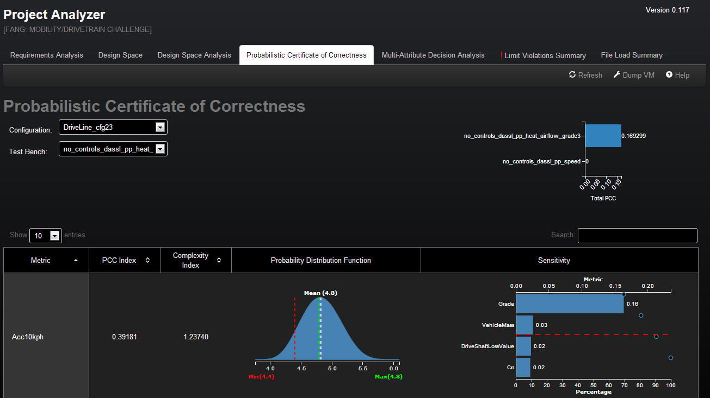

Overview:
The Probabilistic Certificate of Correctness (PCC) tab provides visualizations to determine whether a particular configuration will meet the requirements. The tab tabulates all the metrics of a selected configuration and shows the probability vertificate of correctness index, complexity index, probability density function, and sensitivity analysis for each.
The PCC index is a measure of the probability that the metric meets the requirements. The complexity index is a measure of how complex a metric is.
The probability density function (PDF) provides a visualization of the distribution of the results of each metric.
Sensitivity analysis is accomplished using a Pareto plot, which provides a visualization of which parameters control the most variability in reaching the metric goals. Pareto analysis uses the Pareto principle which states that 80% of the variability of a design is controlled by 20% of the parameters. The red dashed line seperates the top, most influential parameters (80% of the variability), from the bottom less impactful parameters (20% of the variability).

Instructions:
If no design is selected, the tab will display the first configuration of the first testbench upon being opened for the first time.
The drop down menus located above tables can be used to select a configuration to examine. Once a configuration is selected, the table will populate based on data from that configuration in the first test bench. The test bench drop down menu will update, based on the configuration selected, to only display test benches in which that configuration exists. Changing the test bench selection will repopulate the data in the table to reflect the configuration in a the new test bench.